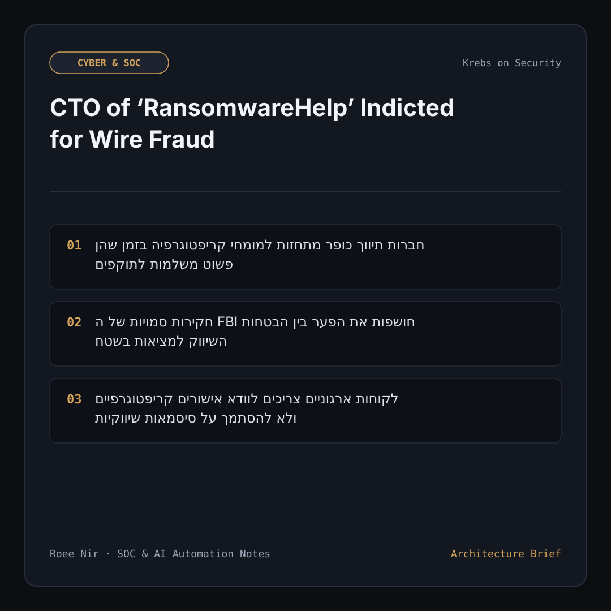

MANUAL PUBLISH PACK · Never auto-posted to LinkedIn without your click.
1. Visual Card (1080x1080)

2. פוסט מוכן + תגובה ראשונה
הבטחות שיווקיות על כלי הצפנה קנייניים שמשחזרים מאה אחוז מהנתונים נשמעות טוב עד שמבצעים בדיקת עומק למערכת. כתב האישום הפדרלי נגד בכירי חברת השירותים RansomwareHelp חושף מציאות עגומה שבה הבטחות לפתרונות קריפטוגרפיים מתקדמים היו בסך הכל תשלום שקט לתוקפים מאחורי הגב של הלקוח. האתר טען שיש לו מומחים שמחזירים מידע נעול בלי לשלם סחיטה, אבל מבצע סמוי של ה FBI הראה שהם פשוט פנו לתוקפים וביקשו את המפתח הזול ביותר תוך גביית עמלת ענק מהקורבנות. בתכלס, עבור צוותי אבטחה וניהול אירועים בתוך ארגונים, הלקח פשוט מאוד: כשחברה חיצונית טוענת שיש לה קסמים בלעדיים, דורשו לראות את הארכיטקטורה וההוכחות הטכניות לפני שסומכים עליה בזמן משבר. אף כלי אוטומטי לא יחליף תהליך תגובה מנוהל שמתבסס על נתונים פתוחים ובדיקות פורנזיות אמיתיות. איך צוות ה SOC שלכם מסנן ומאמת ספקי צד ג' שמבטיחים פתרונות קסם? #CyberSecurity #SOC #ThreatIntel #Ransomware #IncidentResponse
תגובה ראשונה (לשמירה על חשיפה אורגנית):
לקריאת המחקר והפירוט הטכני המלא מתוך Krebs on Security: https://krebsonsecurity.com/2026/11/cto-of-ransomwarehelp-indicted-for-wire-fraud/